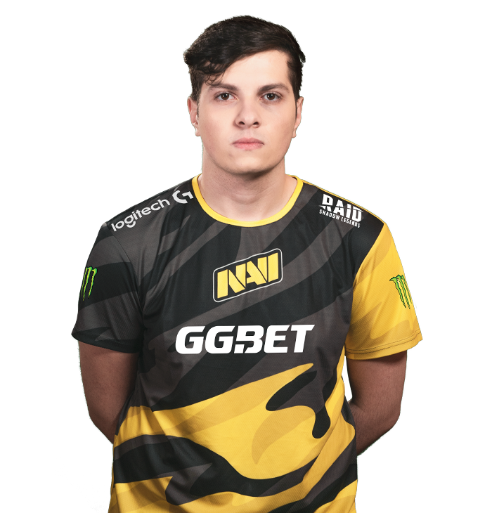
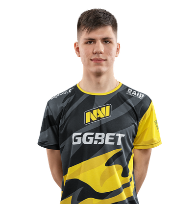

все топ моменты бумыча
все топ моменты бумыча
karera Александра «s1mple» Костылева началась в 2013 году.s1mple побывал в таких коллективах как LAN DODGERS, A-Gaming, Courage Gaming. 1 февраля 2014 года s1mple получил бан от ESL на 2 года за читерство и попытку обхода бана. В результате игрок не смог выступать на официальных турнирах, которые поддерживаются Valve до 2016 года[2]. Дорогие друзья, вчера был начислен бан нашему игроку «s1mple» за использование читов! Хотели бы пояснить для всех хэйтеров и так далее! Бан ему был дан несколько лет назад в другую версию игры «1.6». Кажется этот человек уже всем доказал, что использование сторонних программ — это не его стихия. Руководство нескольких организаций связывается с администрацией ESL для решения данного вопроса! Вопрос как такое могло получиться тревожит всех! Комментарий руководства Courage-gaming В середине сентября Костылев вступил в первый серьёзный коллектив, HellRaisers, но через 5 месяцев покинул его, перейдя в FlipSid3 Tactics. Первой крупной международной победой в карьере игрока стал матч HellRaisers и Fnatic. В июле 2015 года s1mple покинул команду, объяснив, что берет паузу. Однако через 3 дня игрок начал игру в коллективе Evolution, который в свою очередь просуществовал один месяц. Поиграв за команду Worst Players, Костылев стал помогать своим бывшим командам, играя стендином за HellRaisers и FlipSid3 Tactics. В январе 2016 года s1mple присоединился к команде Team Liquid, с которой занял второе место на ESL One: Cologne 2016. В команде Natus Vincere 4 августа 2016 года Костылев возвратился на родину, подписав контракт с Natus Vincere, заменив Даниила «Zeus» Тесленко[3]. В составе Natus Vincere s1mple выиграл ESL One: New York 2016[4], стал серебряным призёром Adrenaline Cyber League 2017, StarLadder i-League StarSeries Season 5[5]. 28 января 2017 года Natus Vincere покинула ELEAGUE Major 2017, проиграв в четвертьфинале команде Astralis со счетом 1-2 и заняв 5-8 место[6]. 19 июля 2017 года Natus Vincere с разгромным счетом 1-3 выбыла из турнира PGL Major Krakow 2017, заняв 12-14 место[7]. 28 января 2018 года Natus Vincere стала бронзовым призёром ELEAGUE Major 2018, уступив в полуфинале команде FaZe со счетом 0-2[8]. В одном из интервью s1mple сказал, что никогда не покинет Natus Vincere[9]. Но в марте 2018 года, по инсайдерским данным[10], команда SK хотела выкупить Костылева и его товарищa по команде Егора Васильевa, но сделка так и не свершилась из-за цены в 1 млн долларов.[11] В июне 2018 года игрок команды Astralis Николай «device» Ридтц (топ 2 мира за 2018 год по версии HLTV.org[12]) назвал Костылева лучшим на тот момент игроком в мире[13]. 23 сентября 2018 года команда Natus Vincere стала серебряным призёром FACEIT Major 2018, уступив в финале команде Astralis со счетом 0-2[14]. 3 марта 2019 года Natus Vincere заняла также 3-е место на IEM Katowice 2019, проиграв в полуфинале команде ENCE со счетом 1-2[15]. 6 сентября 2019 года Natus Vincere заняла 5-8 место на StarLadder Berlin Major 2019, проиграв в четвертьфинале команде NRG со счётом 0-2[16]. Достижения MVP медаль «Самый ценный игрок» от портала HLTV.org Дата Турнир Прим. 2016 2 октября ESL One New York 2016 [17] 2017 3 декабря DreamHack Winter 2017 [18] 2018 25 февраля StarLadder & i-League StarSeries Season 4 [19] 22 апреля Dreamhack Masters Marseille 2018 [20] 3 июня StarSeries & i-League CS:GO Season 5 [21] 18 июня CS:GO Asia Championships 2018 [22] 9 июля ESL One Cologne 2018 [23] 3 ноября BLAST Pro Series Copenhagen 2018 [24] 2019 7 апреля StarSeries & i-League CS:GO Season 7 [25] 2020 1 марта IEM Katowice 2020 [26] 2021 24 января BLAST Premier Global Final 2020 [27] Год Позиция Прим. 2016 4 [28] 2017 8 [29] 2018 1 [30] 2019 2 [31] 2020 2 29 декабря 2016 года портал RedBull назвал Александра «s1mple» Костылева лучшим игроком 2016 года. В опросе приняли участие более 77 000 человек. За Александра отдали свой голос 41 % зрителей. 19 января 2018 года по результатам голосования участников FACEIT Pro League получил самое престижное звание «Игрок года 2017». Киберспортивные награды Александр пять раз попадал в топ-20 лучших игроков мира по версии сайта HLTV.org: в 2016 году — 4 место;[32] в 2017 — 8 место;[33] лучший игрок мира в 2018;[1] 2019 и 2020 годах — 2 место.[34][35] Лучший киберспортсмен 2016 года по версии RedBull Gaming.[36] Стал лучшим в номинации «Момент года» по версии ESPN Esports Awards в 2016 году[37]. 3 сентября 2018 года по итогам голосования Stockholm International Esports Awards, был удостоен звания «Игрок года»[38]. 12 ноября 2018 года на церемонии вручения премии за главные достижения в области киберспорта Esports Awards получил награду «Киберспортсмен года на PC»[39]. Рекорды
разнос от симпла 1 в 4 против г 2 8 ноября 2018 года Александр Костылев стал первым игроком в истории Counter-Strike, которому удалось достичь за год (на 137 картах) разницы убийств/смертей +1000, побив предыдущий рекорд +768, установленный по итогам 2017 года Марсело Давидом, известным как coldzera (англ.)русск.[40].Карьера ниса началась в середине 2015 года, он начал играть в команде ACES вместе с Дмитрием «hooch» Богдановым. Позже он участвовал в таких коллективах как Rebels, Team Empire, NokSuKao. Шарипов часто менял команды, пока организация Flipsid3 Tactics не взяла игрока на испытательный срок. В новой команде Денис продолжил демонстрировать высокий индивидуальный уровень игры, благодаря чему привлёк к себе внимание Natus Vincere. В составе Рождённых Побеждать electronic заменил[6] Дениса «seized» Костина и проявил себя с первых турниров. В команде Flipsid3 Tactics В составе Flipsid3 Tactics Денис раскрывает свой потенциал и становится чемпионом DreamHack Leipzig 2017[7], скорее всего, именно после этого турнира его заметила команда Natus Vincere и дополнила свой состав. В команде Natus Vincere Осенью 2017 года в команде Natus Vincere были серьёзные проблемы, как отметил Денис «seized» Костин: «Мы не могли развиваться из-за атмосферы, которая была в коллективе». После этого в команде начинаются перемены. 6 ноября 2017 года организация выкупает у команды Flipsid3 Tactics electronic`а в замен на аренду «seized» Дениса Костина[6]. В новом составе Денис проявил себя с лучшей стороны сразу. Natus Vincere выиграли DreamHack Winter 2017, а Шарипов завершил свой первый турнир в новой команде с показателем У/С 1,12[8]. Затем следовал мейджор — ELEAGUE Major 2018, в котором Денис дошёл до полуфинала. С уверенностью можно сказать, что в команде Natus Vincere раскрылся потенциал Дениса[9], ведь потом он занял 2 место на FACEIT Major: London 2018 и стал чемпионом BLAST Pro Series — Copenhagen 2018 и ESL One: Cologne 2018[10]. Денис «electronic» Шарипов занял 4 место из 20 в рейтинге игроков мира 2018 года по версии портала HLTV.org[3]. В 2019 — шестое[4] и в 2020 году — пятое[11] 6 февраля 2020 года electronic в составе команды Natus Vincere проигрывают в финале турнира ICE Challenge 2020 против mousesports со счётом 3-1 в пользу последних[12]. Но не смотря на поражение команды Дениса, он был назван лучшим игроком турнира и получает свою первую MVP медаль в карьере по версии портала HLTV.org[13] 1 марта 2020 года Денис Шарипов в составе команды Natus Vincere выиграл турнир IEM Katowice 2020, обыграв в финале команду G2 со счётом 3-0[14]. 24 января 2021 года electronic побеждает со своей командой в гранд-финале турнира BLAST Premier Global Final 2020 против Astralis со счётом 2-0, и забирает с
безумный клатч симпла 1 в 4 против ликвидслйдуйший bombl4 Карьера Кирилла Михайлова началась в команде Elements Pro Gaming, но спустя несколько месяцев он переходит в команду Quantum Bellator Fire.[2] Долгое время успехов у команды не было, но в 2018 году она занимает 2 место в СНГ Миноре к ELEAGUE Major: Boston 2018. Прогнозы на команду Quantum Bellator Fire были неутешительны, но, тем не менее, команда заняла 5-8 место и обрела статус «Легенды».
20 июня 2018 года, организация Winstrike выкупает состав Quantum Bellator Fire[3].
21 октября 2018 года стало известно, что Winstrike переводит всех игроков команды в запас, кроме Кирилла. Это было вызвано неудачным выступлением на FACEIT Major: London 2018, там команда проиграла три карты из трёх и выбыла[4]. Он стал капитаном и новая команда была построена вокруг него. В этой команде Кирилл играл вплоть до перехода в Natus Vincere.
Natus Vincere
28 мая 2019 года на портале HLTV вышла статья, в которой сообщается, что сделка между Winstrike Team и Natus Vincere по переходу Кирилла в состав Na`Vi уже близка к завершению[5]. На следующий день организации объявили об удачном завершении сделки. В итоге Кирилл заменил в составе Рождённых Побеждать Иоанна «Edward» Сухарева, который, в свою очередь, перешёл в Winstrike на правах аренды[6]. Генеральный директор Winstrike Ярослав Комков заявил, что трансфер Кирилла стал самым дорогим в истории российского киберспорта[7].
После перехода Кирилл рассказал, что чувствует себя виноватым перед Winstrike Team. После трансфера предыдущая команда Михайлова не смогла пройти отборочные на CIS Minor Championship — Berlin 2019 и лишилась шансов попасть на StarLadder Berlin Major 2019.
все топ моменты бумыча
слйдуйший perfecto В Counter-Strike: Global Offensive начал играть с 2017 года. Первой профессиональной командой стала российская команда «Atlants». Свой первый матч, который освещался на HLTV (англ.)русск., сыграл 20 мая 2018 года против «Shooting Stars». В том best of 3 матче Илья набрал 1.52 КД. За Atlants Perfecto в общей сложности сыграл 19 матчей, которые освещались на HLTV[1]. На турнире EPICENTER 2018 CIS Open Qualifier #4 выступал за «skipping school». На этом турнире он сыграл 3 матча и в среднем набрал 1.16 КД[1]. В октябре 2018 его заметила команда Syman. Играя за эту команду Илья получил большой игровой опыт: принял участие в семи LAN-турнирах и прошёл на StarLadder Berlin Major 2019. На отборочном СНГ-миноре Илья стал лучшим игроком команды с рейтингом 1.08 Вместе с коллективом он выиграл турнир на 35.000 долларов США NEST Pro Series 2019[1]. Молодого игрока заметил тренер команды Na’Vi Андрей Городенский и пригласил в стан «рожденных побеждать»[2]. С 24 января 2020 года выступает за одну из лучших команд мира Natus Vincere. Свой первый матч за «рожденных побеждать» сыграл 1 февраля 2020 года против Godsent (англ.)русск.. Тот матч он закончил с рейтингом 1.01[1]. В октябре 2020 заразился COVID-19, в связи с чем произошел конфликт с командой forZe. Все дело в том, что матч был перенесен без согласия с forZe. Игроки команды начали обвинять команду Na’Vi в злоупотреблении своим влиянием на профессиональной сцене. Игроки украинской организации позже заявили, что все претензии нужно высказывать турнирному организатору[3].
 клатч от перфоратора против моузовследуший бит по нему нет википедии
nafany он выполняет роль капитана тоесть вероятней всего разыгрывает быльше всего калатчей, даёт колы даёт больше вcего инфы
нафаня рвёт навиширо исполняет роль основного авп в команде от него ждут больше всего фрагов его задачапринемать или играт агресивно
широ хорошаксель исполняет роль сапорта он выходит на размен инакидывает флешки и раскидывает смоки
нагибание от акселяХасенов, Абай (род. 18 мая 1994) — казахстанский профессиональный игрок в Counter-Strike: Global Offensive, также известный под псевдонимом «Hobbit». Победитель PGL Major Kraków 2017 в составе Gambit Esports,[1] занял 11 место в рейтинге топ-20 лучших игроков мира по версии сайта HLTV.ORG по итогам 2017 года.[2] Карьера Абай, будущая казахстанская звезда киберспорта, начал свой путь в команде PARTY в 2015 году, которая сменила своё название на TENGRI в 2016 году. В 2016 году дарование команды TENGRI заметила крупная компания Gambit Esports, где уже были Даурен «Adren» Кыстаубаев, Рустем «mou» Телепов, Михаил «Dosia» Столяров, где с Абаем подписывают контракт. 2017 год стал знаковым годом не только для Hobbit, но и для всего СНГ-сообщества. Новость о победе Gambit на PGL Major Kraków 2017 облетела весь мир[1], а выигрышем стали 500 000 долларов. Спустя время игроки начали покидать организацию и в сентябре 2018 года Hobbit был выставлен на трансфер. После ухода он возвращается к коллегам под тэгом K23 и выигрывает 1 500 000 тенге на WESG 2018 Central Asia: Kazakhstan. Однако спустя три месяца он присоединяется к европейской организации HellRaisers. Единственным весомым достижением команды с Абаем была победа на WePlay! Forge of Masters 2019 и 3 000 долларов. В октябре 2019 года перешёл в команду Winstrike.[3] В августе 2020 года вернулся в организацию Gambit Esports и выступал под тегом Gambit Youngsters. В октябре 2020 года организация убрала «Youngsters» из названия, теперь Абай и его команда выступали под тегом «Gambit» В мае 2021 года его команда занимает 1 строчку в мировом рейтинге по версии HLTV.org.[4]
топовые моменты хобитаjame Алии это игрок команды виртус про он исполняет роль снайпера-капатина
топ моменты джеймаYecindar тимейт джейма исолняет роль рифлера
топ моменты екиндарабустер исполняет роль саппорта
 не плохая карта от бустера
не плохая карта от бустера
кикерт исплняет роль хелпуюшего